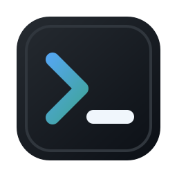

SSH
‹
☰
＋
SFTP
列表（0）
刷新
脱敏
新建
SSH
/
0/0
↑
↓
×
›
新建连接
导入连接
导出连接
下载
新建文件
新建文件夹
重命名
修改权限
删除
复制为新标签
打开为新窗口
关闭其他
关闭左侧
关闭右侧
关闭全部
关闭标签
打开
关闭会话
关闭全部
编辑
复制
重命名
删除
复制
粘贴
清屏
搜索
新建连接
保存前可测试 SSH 与 SFTP 是否可用
×
名称
主机
端口
用户名
认证方式
密码
私钥
连接超时
保活间隔
级别
密码
私钥路径
选择
私钥口令
备注
连接后检测终端路径
删除
测试连接
取消
保存
导出连接信息
选择需要导出的连接，可按需包含敏感字段。
×
全选
包含密码和私钥口令
取消
导出
设置
×
外观
配色
浅色
深色
终端字号
连接信息保存位置
默认位置
当前位置
更改位置
界面行为
启动时展开连接面板
启动时展开 SFTP 面板
默认检测终端路径
默认启用命令提示
SFTP 默认跟随终端路径
连接列表展示主机和用户
快捷键
复制终端选中内容
Ctrl+Shift+C
粘贴到终端
Ctrl+Shift+V
清屏
Ctrl+Shift+L
搜索终端内容
Ctrl+F
鼠标后退侧键
不设置
SFTP 后退
返回上级
上个标签
切换 SFTP
鼠标前进侧键
不设置
SFTP 前进
终端路径
下个标签
切换 SFTP
取消
保存配置
文件编辑
-
重新读取
下载
保存
×
未打开文件
文本文件支持直接编辑并保存回远程服务器。
文件尚未保存
关闭前请选择如何处理当前修改。
继续编辑
放弃修改
保存并关闭